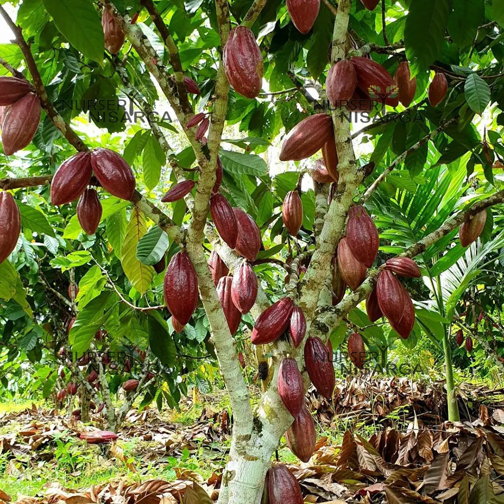

Overview
|
Dark chocolate, also known as plain chocolate and black chocolate, is a form of chocolate made from cocoa solids, cocoa butter and sugar. It has a higher cocoa percentage than white chocolate and milk chocolate. Dark chocolate is valued for its health benefits, and for its reputation as a sophisticated choice of chocolate. Like milk and white chocolate, dark chocolate is used to make chocolate bars and to coat confectionery.
Dark chocolate gained much of its reputation in the late 20th century, as French chocolatiers worked to establish dark chocolate as preferred over milk chocolate in the French national palate. As this preference was exported to countries such as the United States, associated values of terroir, bean-to-bar chocolate making and gourmet chocolate followed. Because of the high cocoa percentage, dark chocolate can contain particularly high amounts of heavy metals such as lead and cadmium. |

|
Origin & History
|
Dark chocolate originates from the seeds (cocoa beans) of the fruit of the Theobroma cacao tree, which is native to tropical South and Central American rainforests. These seeds are fermented, dried, roasted, and ground into a cocoa mass, which is then blended with sugar and cocoa butter to create the finished product.
Cacao was domesticated over 5,000 years ago, with the earliest known use by the Mayo-Chinchipe people of present-day Ecuador around 3300 BC. Later, the Olmec in Mexico and Central America also used cacao. When the Spanish arrived in the 1500s, they encountered many cacao drinks and brought chocolate to Europe, where it was sweetened and became popular among the elite. In 1828, Coenraad Johannes van Houten developed a process to produce Dutch cocoa, enabling mass production. The first modern chocolate bar was created in 1847 by Fry’s. After milk chocolate was invented in 1875, the term “dark chocolate” emerged to distinguish the traditional type. In the U.S., dark chocolate was once seen as masculine and not suitable for children, and it was often eaten with other foods. During the World Wars, it was fortified with vitamins. In the late 20th century, especially in France, dark chocolate gained popularity among connoisseurs, influenced by figures like Robert Linxe. French flavor standards emphasizing cocoa percentage, bean origin, and terroir were later introduced to the U.S., particularly after Valrhona entered the market in 1984. By the 2000s, preferring dark chocolate in the U.S. became associated with refined taste and sophistication. |
 |